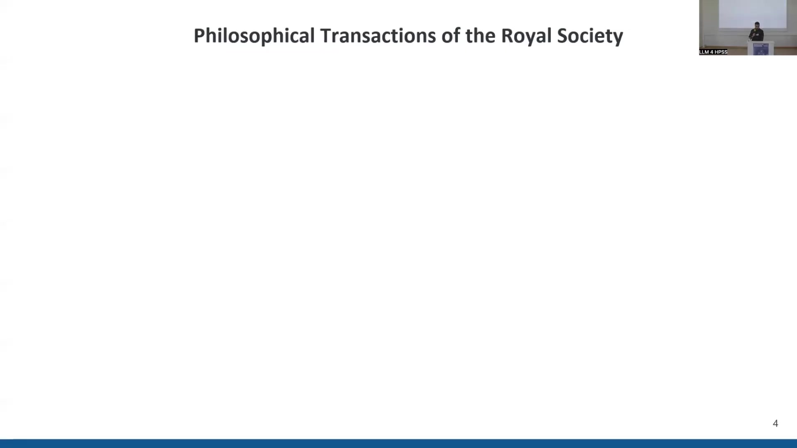

16 LLMs for Chemical Knowledge Analysis
16.1 Overview
The work focuses on leveraging Large Language Models (LLMs) for metadata enrichment and diachronic analysis of chemical knowledge within a large corpus of historical scientific texts. The primary objective is divided into two parts. Part I involves using LLMs to improve metadata for historical texts, specifically focusing on categorizing articles by scientific discipline and semantic tags (topics), and generating abstractive summaries. Part II presents a case study analyzing the evolution of the chemical space over time across different scientific disciplines, aiming to identify periods of interdisciplinarity and knowledge transfer.
The research utilizes the Royal Society Corpus (RSC) 6.0 Full, a diachronic corpus spanning over 300 years of scientific writing (1665-1996). This corpus contains almost 48,000 texts and nearly 300 million tokens. It was created with steps to improve OCR quality and correct spelling.
For metadata enrichment (Part I), the Hermes-2-Pro-Llama-3-8B model, a fine-tuned variant of Llama 3 optimized for structured output (JSON, YAML), is employed. The LLM acts as a “librarian” following a detailed system prompt that defines its role, objective, input format (OCR text, existing metadata like title, author, date, journal, text snippet), and specific tasks.
The tasks include suggesting alternative titles, writing 3-4 sentence TL;DR summaries for a high school level, identifying exactly five main topics (like Wikipedia keywords), and classifying the primary scientific discipline from a predefined list of nine categories (Physics, Chemistry, Environmental & Earth Sciences, Astronomy, Biology & Life Sciences, Medicine & Health Sciences, Mathematics & Statistics, Social Sciences & Humanities) and a suitable second-level sub-discipline (not from the primary list). The expected output format is YAML.
Validation checks show 99.81% valid YAML output and 94% of predicted primary disciplines fall within the predefined set. Some instances of hallucination were observed, such as “Earth Sciences” instead of “Environmental & Earth Sciences” or inventing “Music” as a discipline. Initial analysis of the LLM-classified data shows discipline distribution over time, highlighting the rise of chemistry around the late 18th century (chemical revolution) and the prominence of biology, physics, and chemistry from the 19th century onwards. A t-SNE projection of TL;DR summaries visualizes the distribution and overlap of disciplines in semantic space.
For the diachronic analysis of the chemical space (Part II), the focus is on chemistry, biology, and physics. Chemical terms are extracted using ChemDataExtractor, a Python module. A two-pass application of ChemDataExtractor is used: first on the whole text, then a second pass on the initial list of extracted substances to reduce noise, particularly in earlier periods.
Kullback-Leibler divergence (KLD) is the primary method for analyzing the chemical space evolution. KLD is applied in two ways: independently per discipline to trace evolution over time (comparing 20-year windows sliding by 5 years) and pairwise between disciplines (chemistry vs. physics, chemistry vs. biology) using 50-year periods. Results show similar KLD trends across disciplines with peaks and troughs, and decreasing KLD towards the timeline end, indicating less variation between past and future periods.
Analysis of substance contributions to KLD divergence reveals differences between periods. For example, there was a focus on elements in the late 18th century versus biochemistry in biology and noble/radioactive gases in chemistry/physics in the late 19th century. Pairwise KLD analysis using word clouds confirms thematic differences (biochemical substances in biology, organic chemistry substances in chemistry, metals/noble gases in physics). The pairwise comparison also helps detect “knowledge transfer” cases, where an element’s distinctiveness shifts from one discipline to another over time (e.g., tin shifting from chemistry to physics in the 18th century).
Future work includes evaluating the LLM output quality, comparing results with other LLMs, adding more disciplines to the chemical space analysis, and conducting more fine-grained diachronic analysis by adjusting time windows and comparison periods. Challenges include handling historical terminology and OCR quality issues in older texts, and the potential for LLM hallucinations or artifacts in classification. The extracted metadata is intended to feed into knowledge graphs for further structured analysis.
16.2 Introduction and Research Objectives
The presentation is titled “Leveraging Large Language Models for Metadata Enrichment and Diachronic Analysis of Chemical Knowledge in Historical Scientific Texts”. The authors are Diego Alves, Sergei Bagdasarov, and Badr M. Abdullah, affiliated with the Department of Language Science and Technology at Saarland University. The work is presented at the Large Language Models for the History, Philosophy, and Sociology of Science (LLM 4 HPSIS) workshop.
The research is structured into two main parts:
Part I investigates the application of Large Language Models (LLMs) to enhance the metadata associated with historical scientific texts. This involves categorizing articles based on their scientific discipline and identifying relevant semantic tags or topics. Additionally, the process includes generating abstractive summaries for the articles.
Part II constitutes a case study focused on analyzing the evolution of the chemical space across different scientific disciplines over time. The objective is to pinpoint specific periods characterized by heightened interdisciplinarity and significant knowledge transfer between fields.
16.3 Data Source: The Royal Society Corpus
The research investigates how scientific English evolved over time, particularly its optimization for expert-to-expert communication. It also analyzes phenomena such as knowledge transfer and the identification of influential papers and authors.
The primary data source is the Philosophical Transactions of the Royal Society of London. This journal was first published in 1665 by the Royal Society of London and holds the distinction of being the oldest scientific journal in continuous publication, maintaining a high reputation today. It played a pivotal role in the development of scientific communication, notably by establishing the peer-reviewed paper publication model.
The corpus contains numerous influential contributions throughout history. Examples include Isaac Newton’s “New Theory about Light and Colours” from the 17th century (1672), Benjamin Franklin’s description of the “Philadelphia Experiment” (the Electrical Kite) in an 18th-century letter (1752), and James Clerk Maxwell’s work “On the Dynamical Theory of the Electromagnetic Field” from the 19th century (1865). The corpus also includes less conventional papers, such as speculations about inhabitants of the Moon, though the research focuses on linguistic and thematic analysis rather than scientific validity.
The specific version of the corpus utilized is the RSC 6.0 Full. This version covers a period exceeding 300 years, from 1665 to 1996. It comprises almost 48,000 individual texts and contains nearly 300 million tokens. The corpus includes some pre-existing metadata attributes such as author, century, year, and volume. A previous study applied LDA topic modeling to infer research field categories, but this approach resulted in categories that sometimes mixed scientific disciplines, sub-disciplines, and types of text like “observations” and “reporting”.
16.4 LLMs for Metadata Enrichment

The project aims to enhance the existing metadata and generate new metadata for the corpus using Large Language Models (LLMs). LLMs are applied for various information management tasks including text clean-up, summarization, facilitating access and retrieval, information extraction, categorization, and ultimately, feeding knowledge graphs.
For each article in the corpus, the desired outputs from the LLM processing include a hierarchical categorization specifying the primary discipline and a sub-discipline, a list of index terms or semantic tags representing the main topics, and a concise TL;DR summary.
The specific LLM utilized for this task is Hermes-2-Pro-Llama-3-8B, which belongs to the Llama 3 family developed by Meta. Llama 3 is available in different parameter sizes, including 8 billion (8B) and 70 billion (70B), with a 400 billion (400B) version currently under training. The model is accessible via Hugging Face and is reported to perform significantly better than previous models like Mistral and Llama 2 for instruction-following tasks. The Hermes-2-Pro-Llama-3-8B variant is specifically fine-tuned with instruction tuning, making it particularly adept at producing structured output formats such as JSON and YAML.
The LLM is instructed to act as a “librarian” responsible for organizing a collection of historical scientific articles from the Royal Society of London published between 1665 and 1996. Its objective is to read, analyze, and organize this large corpus to create a structured database that facilitates search, retrieval, and analysis by researchers, historians, and scientists. The input provided to the LLM consists of OCR-extracted text of the original articles along with existing metadata like the title, author(s), publication date, journal, and a short text snippet. The prompt acknowledges potential issues with OCR quality in the historical texts.
The LLM is assigned four specific tasks:
A. Read and analyze the article to understand its content and context, then suggest an alternative title that better reflects the content.
B. Write a short, 3-4 sentence TL;DR summary that captures the article’s essence and main findings. The summary must be concise, informative, highlight key points, and be written in simple language suitable for a high school student.
C. Identify exactly five main topics for the article. These topics are conceptualized as Wikipedia Keywords for categorizing the text into scientific sub-fields or thematic groups within a scientific journal.
D. Based on the identified topics, determine the primary scientific discipline from a predefined list of nine categories: Physics, Chemistry, Environmental & Earth Sciences, Astronomy, Biology & Life Sciences, Medicine & Health Sciences, Mathematics & Statistics, and Social Sciences & Humanities. The LLM must also identify a suitable second-level sub-discipline that is a branch of the primary discipline and not one of the primary disciplines itself.
The required output format is a valid YAML file. An example input based on an article by Isaac Newton is provided, showing the existing metadata and a text snippet. A corresponding example output in YAML format demonstrates the expected structure, including the article ID, revised title, a list of five topics (e.g., Optics, Refraction, Spectroscopy), the TL;DR summary, the primary scientific discipline (e.g., Physics), and the scientific sub-discipline (e.g., Optics & Light). The prompt explicitly states that the output must be valid YAML and contain no additional text.
Validation checks were performed on the LLM’s output. A high percentage, 99.81%, of the produced outputs were valid YAML files (17486 out of 17520). Furthermore, 94% of the predicted primary scientific disciplines fell within the predefined set of nine categories. However, some instances of hallucination or incorrect assignments were observed. These included predicting “Earth Sciences” instead of the full “Environmental & Earth Sciences” category, inventing novel categories such as “Music”, and occasionally including the index number from the predefined list as part of the discipline string (e.g., “3. Environmental & Earth Sciences”). The LLM also sometimes assigned sub-disciplines like “Neurology” or “Zoology” as primary disciplines. Despite these issues, the majority of papers were correctly assigned to the predefined primary disciplines.
Initial analysis was conducted using the LLM-classified data. A stacked area chart visualizes the distribution of scientific disciplines over time across the corpus. This analysis reveals a more homogeneous distribution of disciplines up to the end of the 18th century. A notable peak in chemical articles is observed in the late 18th century, which is associated with the historical chemical revolution. From the 19th century onwards, biology, physics, and chemistry emerge as the three main pillars represented in the Royal Society’s publications.
A first analysis of the generated TL;DR summaries was performed using t-SNE projection to visualize the semantic space. The t-SNE plot shows the distribution of articles based on their summary texts, colored by their assigned discipline. It indicates overlap between chemistry, physics, and biology, with chemistry appearing centrally located in the overlapping region. Disciplines such as humanities, astronomy, and mathematics tend to form more isolated clusters in this projection space. The analysis can be performed diachronically to observe shifts and changes in the semantic overlap between disciplines over time.
16.5 Diachronic Analysis of the Chemical Space
Part II of the research presents a diachronic analysis of the chemical space, focusing specifically on three disciplines: Chemistry, Biology, and Physics, as these are the most frequently represented in the corpus.
Chemical terms are extracted from the texts using ChemDataExtractor, a Python module designed for the automatic identification of chemical substances. The application of ChemDataExtractor involved a two-pass method to mitigate noise, particularly prevalent in earlier periods where the initial pass on the whole text tagged non-chemical entities (like animals) as chemical terms. The second pass applied ChemDataExtractor specifically to the list of substances identified in the first pass, which helped to reduce the amount of noisy output.
Kullback-Leibler divergence (KLD) is the method employed to analyze the evolution and comparison of the chemical space. KLD is applied in two distinct ways. The first method involves an independent analysis for each discipline to trace the evolution of its chemical space along the timeline. This is done by comparing the word distributions of chemical terms within two time windows: a period of 20 years before a specific date is compared with a period of 20 years after that date. This comparison window is then slid along the timeline in 5-year increments. This process yields KLD values for each discipline over time, illustrating internal changes in their chemical vocabulary.
The second method involves pairwise comparisons between disciplines, specifically comparing chemistry with physics and chemistry with biology. This analysis is based on 50-year periods. The output consists of KLD values that quantify the difference in chemical term distributions between the two disciplines within those periods.
The results from the independent KLD analysis per discipline show a similar trend across chemistry, biology, and physics, with peaks and troughs occurring in roughly the same historical periods. Towards the end of the timeline, the KLD plots become flatter, and the overall KLD decreases. This indicates less variation in the chemical space between past and future periods within each discipline during later years.
Analysis focusing on the peak observed in the late 18th century reveals that KLD allows for zooming in to identify the specific chemical substances contributing most significantly to the divergence. In biology and physics during this period, one or two elements exhibit extremely high KLD values, acting as primary drivers of change. Across chemistry, biology, and physics, the same elements are observed to be responsible for the changes seen in the late 18th century.
The analysis of a later period, the second half of the 19th century, shows significant changes. The graphs for biology and physics become much more populated, indicating a wider range of substances contributing to the divergence. The individual contributions of elements are also more uniform. Thematic differences in substances emerge: biology’s chemical space evolves towards biochemistry, while chemistry and physics show a focus on noble gases and radioactive elements, which were discovered towards the end of the 19th century.
Pairwise comparisons, such as between chemistry and biology or chemistry and physics in the second half of the 20th century, further confirm these thematic differences. Word clouds generated from the distinctive substances in these comparisons show that the biology word cloud contains more substances related to biochemical processes in living organisms, while the chemistry word cloud features substances associated with organic chemistry, such as hydrocarbons and benzene. Comparing chemistry and physics reveals more metals, noble gases, and various types of metals, including rare earth, semi-metals, and radioactive metals, in the physics word cloud.
The pairwise comparison method also proves useful for detecting instances of “knowledge transfer”. This is defined as a case where an element is ranked as distinctive of one discipline in an earlier period but becomes more distinctive of another discipline later in time. An illustration using tin (Sn) shows its distinctiveness shifting from chemistry to physics between the first and second halves of the 18th century. Similar shifts are observed for other elements in the early 20th century. Elements becoming distinctive of biology in the 20th century are typically related to biochemical processes.
16.6 Conclusion and Future Work
In conclusion, the research successfully utilized a Large Language Model (LLM) to improve the categorization and topic modeling of texts within the corpus. Building upon the metadata generated by the LLM, a diachronic analysis of the chemical space was conducted across three disciplines.
Future work includes several areas for improvement and further exploration:
It is necessary to evaluate the quality of the output produced by the Llama model to assess its accuracy and reliability.
Comparing the results obtained from Llama with those from other LLMs is also planned to understand model-specific variations.
The chemical space analysis can be expanded by including more disciplines, such as conducting a direct comparison between chemistry and biology.
Furthermore, a more fine-grained diachronic analysis is intended, which will involve experimenting with different time sliding windows and comparison periods for the Kullback-Leibler divergence calculations.